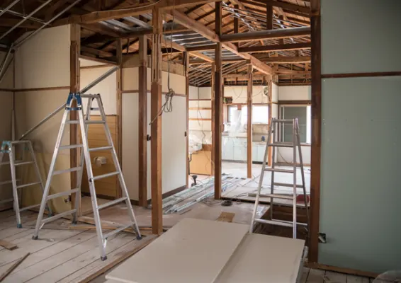
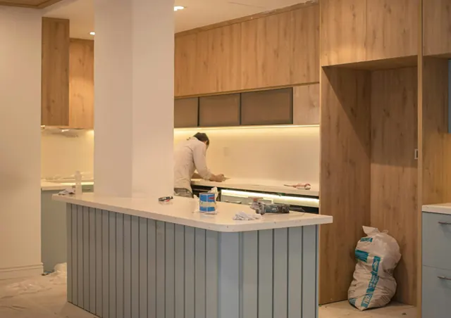

Verbouwen in Nijmegen met weinig ruimte voor de deur
Gepubliceerd op 13 oktober 2026

Bij een verbouwing denk je al snel aan de kamer die op de schop gaat. In een woning met weinig buitenruimte is de route naar buiten minstens zo belangrijk. Oude onderdelen moeten langs deuren, fietsen en soms een gedeelde entree, terwijl nieuwe materialen juist naar binnen komen. Wie in Nijmegen een verbouwing voorbereidt, kan met een eenvoudige plattegrond veel praktische knelpunten vooraf herkennen. Begin daarom bij de ruimte die je daadwerkelijk hebt.
Teken de hele route van kamer naar straat
Loop met een meetlint van de werkruimte naar buiten. Noteer smalle doorgangen, trappen en bochten. Een lang onderdeel kan door de kamerdeur passen en alsnog vastlopen in het trappenhuis. Bespreek met de uitvoerder hoe grote stukken worden vervoerd en welke hulp daarvoor nodig is. Laat zwaar of onhandig transport niet afhangen van wie er toevallig aanwezig is.
Kijk ook waar bewoners en buren dagelijks langs moeten. Houd een gedeelde entree vrij en voorkom dat afval tijdelijk voor toegangsdeuren wordt neergezet. Bij een appartement is het verstandig de planning en het gebruik van gemeenschappelijke ruimtes vooraf met de beheerder of vereniging van eigenaars te bespreken.
Koppel de afvoer aan de werkzaamheden
Maak een lijst van wat er per dag vrijkomt. Als de keuken op maandag wordt verwijderd en de vloer pas later aan de beurt is, verandert de hoeveelheid afval gedurende de week. Met dat overzicht kun je gerichter informatie over container huren nijmegen bekijken. Controleer welke afvalstroom en welk formaat aansluiten op jouw plannen.
Vraag de aannemer welke onderdelen behouden blijven of op een andere manier worden afgevoerd. Neem geen materiaal mee in je schatting dat iemand anders al ophaalt. Andersom moet een oude vloer uit de berging wel worden meegeteld als die tijdens dezelfde klus wordt verwijderd. Een duidelijke taakverdeling voorkomt dubbele afspraken en vergeten stapels.
Beschouw een parkeerplek niet als vanzelfsprekend beschikbaar
Een open plek voor het huis kan aantrekkelijk lijken, maar bekijk eerst of je die voor de container mag gebruiken. Vraag bij de gemeente Nijmegen welke regels voor jouw precieze locatie gelden. Controleer ook of de gekozen plek de doorgang voor andere weggebruikers of de toegang tot aangrenzende panden belemmert.
Bespreek vervolgens met de leverancier of de vrachtwagen daar kan komen en voldoende ruimte heeft voor plaatsing. Een foto met de omliggende straat en obstakels geeft meer informatie dan alleen een huisnummer. Houd rekening met fietsen, geparkeerde auto’s en lage takken. De benodigde manoeuvreerruimte kan groter zijn dan de plek die de container zelf inneemt.
Voorkom een botsing met andere leveringen
Schrijf de containerlevering, materiaalbezorging en werkzaamheden van vaklieden in hetzelfde overzicht. Spreek af wie op locatie aanspreekbaar is. Daarmee voorkom je dat verschillende chauffeurs tegelijk bij een smalle toegang staan en niemand weet waar de lading heen moet. Geef wijzigingen meteen door aan de betrokken partijen. Bekijk bij afzetcontainers ook de buitenmaten en de manier waarop je afval in de bak brengt. De grootste inhoud is niet automatisch het handigst voor jouw situatie. Laat je adviseren over een passende combinatie van capaciteit en plaatsing. Bespreek vooraf hoe ophalen of wisselen wordt geregeld, zodat je daarmee niet begint als de ruimte al helemaal vol staat.

Stem het gebruik van gedeelde ruimtes concreet af
Een mededeling dat je gaat verbouwen is vaak te algemeen om anderen te laten plannen. Benoem daarom de dagen waarop er veel materiaal wordt verplaatst en wie zij kunnen bereiken als een toegang toch wordt geblokkeerd. Vraag welke andere activiteiten al gepland staan. Een verhuizing of bezorging bij de buren kan invloed hebben op de ruimte die je zelf dacht te kunnen gebruiken.
Controleer bij een gedeelde lift of doorgang welke gebouwafspraken gelden voor materiaaltransport en bescherming. Laat de uitvoerder die afspraken ook kennen. Werk niet met aannames omdat iets tijdens een vorige verbouwing wel kon. De situatie en de betrokken bewoners kunnen veranderd zijn. Maak bovendien duidelijk wie de gezamenlijke ruimte na afloop controleert, zodat die verantwoordelijkheid niet tussen bewoner, aannemer en beheerder in blijft hangen.
Geef ieder materiaal een bestemming voordat het naar buiten gaat
In een kleine voortuin of op een smalle stoep is nauwelijks ruimte om achteraf nog te sorteren. Bepaal daarom binnen al welke materialen in de gekozen afvalstroom passen en welke apart moeten worden gehouden. Zet herbruikbare onderdelen herkenbaar aan de kant en regel daarvoor een afhaalmoment. Laat ze niet onbeschermd buiten staan terwijl nog onduidelijk is wie ze krijgt of wanneer iemand langskomt.
Controleer de acceptatievoorwaarden met de lijst van de uitvoerder erbij. Bij twijfel vraag je de inzamelaar om duidelijkheid voordat het materiaal in de container verdwijnt. Denk ook aan de verpakkingen van nieuwe producten, want die komen later in het project vrij. Spreek af of de leverancier ze meeneemt of dat jij de afvoer regelt. Zo blijft er na het grove werk geen onverwachte tweede berg achter.
Maak opruimen onderdeel van iedere werkdag
Spreek een vast moment af waarop de transportroute wordt gecontroleerd. Haal losse verpakkingen weg, zet gereedschap terug en kijk of materialen die nog nodig zijn droog en herkenbaar apart staan. Informeer buren over momenten waarop er veel heen en weer wordt gelopen. Dat geeft hun de gelegenheid rekening te houden met de werkzaamheden.
Controleer vóór het ophalen nog één keer of alle geplande afvalmaterialen zijn afgevoerd en de vrachtwagen bij de container kan komen. Pas daarna kan de buitenruimte terug naar normaal gebruik. Met zo’n vaste volgorde houd je de verbouwing overzichtelijk, ook wanneer er rondom de woning weinig ruimte over is.
Terug naar de beginpagina
BEKIJKAannemers en verbouw in Nijmegen
Zin om te beginnen? In onze bedrijvengids vind je alle 52 aannemers in Nijmegen, met openingstijden, kenmerken en een kaart.
Bekijk alle 52 aannemers in Nijmegen
Heb je zelf een aannemer? Laat je hier uitlichten.